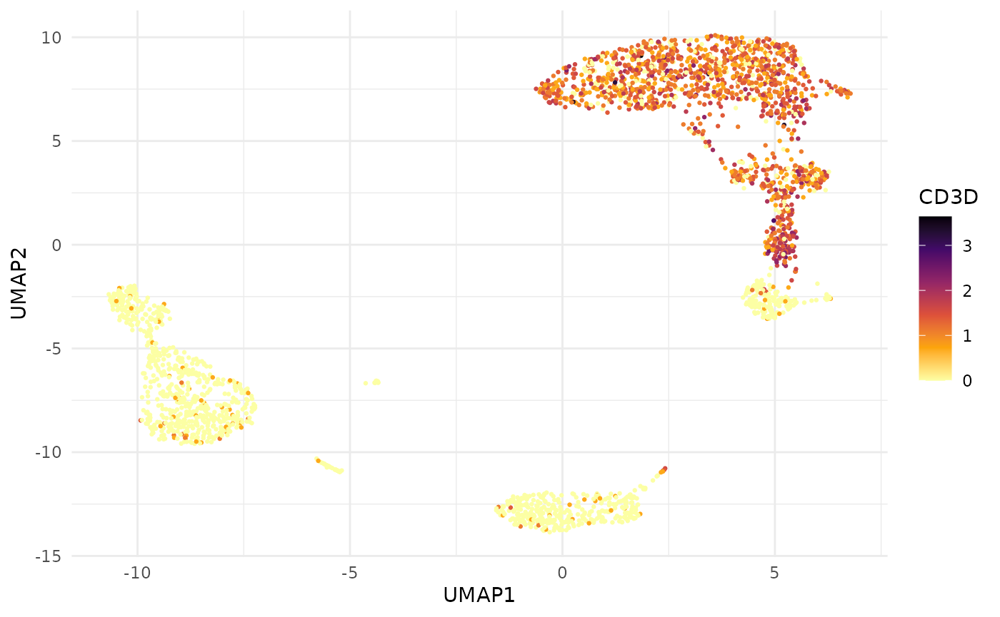
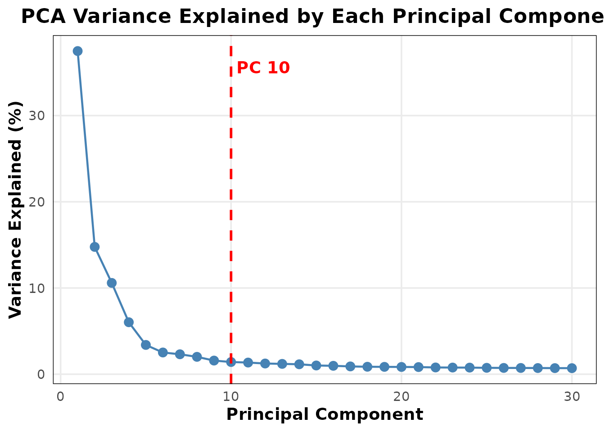
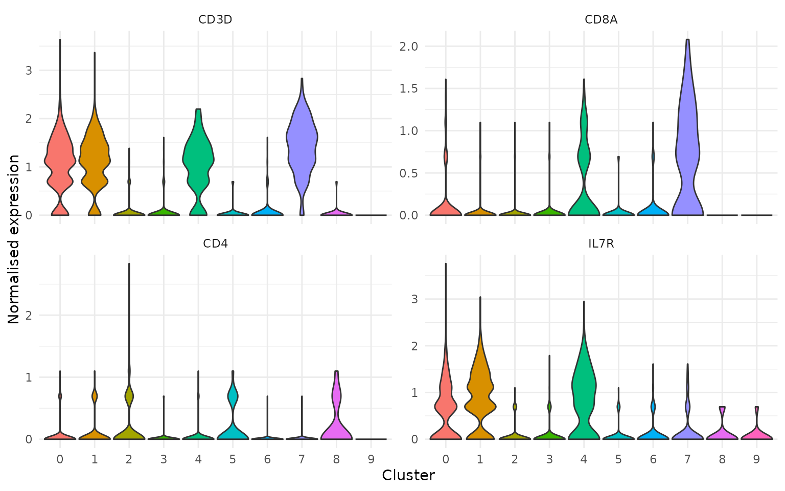

Tidy Data Extraction from Seurat Objects
Source:vignettes/articles/data-extraction.Rmd
data-extraction.RmdMotivation
Seurat’s FetchData() is the standard way to pull data
out of a Seurat object for custom plotting or downstream analysis. It
works, but has a few rough edges:
- Returns a
data.framewith cell barcodes as rownames, not a column - Mixes expression data, embeddings, and metadata into one flat call
- No control over which layer (counts vs normalised) to extract
- Returns wide format for features, which requires manual pivoting for tidy workflows
BadranSeq provides two focused alternatives:
| Function | Returns | Use case |
|---|---|---|
fetch_cell_data() |
One row per cell | Metadata, embeddings — no expression |
fetch_feature_data() |
One row per cell × feature | Expression data + optional metadata/embeddings |
Both return tibbles with cell_id as an explicit
column.
The FetchData problem
Here is what Seurat::FetchData() returns for a simple
request — UMAP coordinates plus a gene:
## umap_1 umap_2 CD3D
## AAACATACAACCAC 4.210592 3.641463 1.6094379
## AAACATTGAGCTAC 1.630015 -12.747495 0.0000000
## AAACATTGATCAGC 4.907857 6.225690 2.1972246
## AAACCGTGCTTCCG -9.577241 -5.631025 0.0000000
## AAACCGTGTATGCG 4.862227 -3.565488 0.0000000
## AAACGCACTGGTAC 5.625649 7.294040 0.6931472Cell barcodes are trapped in rownames. Expression and embeddings are mingled. There is no way to request a specific layer.
Compare with BadranSeq’s approach — embeddings and expression are requested through separate, explicit arguments:
fetch_feature_data(
pbmc3k,
features = "CD3D",
layer = "data",
reductions = "umap",
metadata = FALSE
)## # A tibble: 2,700 × 5
## cell_id features data UMAP1 UMAP2
## <chr> <fct> <dbl> <dbl> <dbl>
## 1 AAACATACAACCAC CD3D 1.61 4.21 3.64
## 2 AAACATTGAGCTAC CD3D 0 1.63 -12.7
## 3 AAACATTGATCAGC CD3D 2.20 4.91 6.23
## 4 AAACCGTGCTTCCG CD3D 0 -9.58 -5.63
## 5 AAACCGTGTATGCG CD3D 0 4.86 -3.57
## 6 AAACGCACTGGTAC CD3D 0.693 5.63 7.29
## 7 AAACGCTGACCAGT CD3D 1.10 5.53 3.74
## 8 AAACGCTGGTTCTT CD3D 1.39 5.47 3.79
## 9 AAACGCTGTAGCCA CD3D 1.10 -1.51 -12.6
## 10 AAACGCTGTTTCTG CD3D 0 -9.39 -2.97
## # ℹ 2,690 more rowscell_id is a column. The feature name is explicit. The
layer is explicit. The output is a tibble ready for ggplot2
or dplyr pipelines.
Cell-level data
fetch_cell_data() extracts metadata and embeddings — no
expression data. This is the right tool when you need cell annotations
for plotting or filtering.
All metadata (default)
fetch_cell_data(pbmc3k)## # A tibble: 2,700 × 9
## cell_id orig.ident nCount_RNA nFeature_RNA seurat_annotations nCount_SCT
## <chr> <fct> <dbl> <int> <fct> <dbl>
## 1 AAACATACAAC… pbmc3k 2419 779 Memory CD4 T 2275
## 2 AAACATTGAGC… pbmc3k 4903 1352 B 2598
## 3 AAACATTGATC… pbmc3k 3147 1129 Memory CD4 T 2469
## 4 AAACCGTGCTT… pbmc3k 2639 960 CD14+ Mono 2343
## 5 AAACCGTGTAT… pbmc3k 980 521 NK 1900
## 6 AAACGCACTGG… pbmc3k 2163 781 Memory CD4 T 2149
## 7 AAACGCTGACC… pbmc3k 2175 782 CD8 T 2158
## 8 AAACGCTGGTT… pbmc3k 2260 790 CD8 T 2204
## 9 AAACGCTGTAG… pbmc3k 1275 532 Naive CD4 T 1905
## 10 AAACGCTGTTT… pbmc3k 1103 550 FCGR3A+ Mono 1980
## # ℹ 2,690 more rows
## # ℹ 3 more variables: nFeature_SCT <int>, SCT_snn_res.0.5 <fct>,
## # seurat_clusters <fct>Add UMAP coordinates
fetch_cell_data(pbmc3k, reductions = "umap")## # A tibble: 2,700 × 11
## cell_id UMAP1 UMAP2 orig.ident nCount_RNA nFeature_RNA seurat_annotations
## <chr> <dbl> <dbl> <fct> <dbl> <int> <fct>
## 1 AAACATACA… 4.21 3.64 pbmc3k 2419 779 Memory CD4 T
## 2 AAACATTGA… 1.63 -12.7 pbmc3k 4903 1352 B
## 3 AAACATTGA… 4.91 6.23 pbmc3k 3147 1129 Memory CD4 T
## 4 AAACCGTGC… -9.58 -5.63 pbmc3k 2639 960 CD14+ Mono
## 5 AAACCGTGT… 4.86 -3.57 pbmc3k 980 521 NK
## 6 AAACGCACT… 5.63 7.29 pbmc3k 2163 781 Memory CD4 T
## 7 AAACGCTGA… 5.53 3.74 pbmc3k 2175 782 CD8 T
## 8 AAACGCTGG… 5.47 3.79 pbmc3k 2260 790 CD8 T
## 9 AAACGCTGT… -1.51 -12.6 pbmc3k 1275 532 Naive CD4 T
## 10 AAACGCTGT… -9.39 -2.97 pbmc3k 1103 550 FCGR3A+ Mono
## # ℹ 2,690 more rows
## # ℹ 4 more variables: nCount_SCT <dbl>, nFeature_SCT <int>,
## # SCT_snn_res.0.5 <fct>, seurat_clusters <fct>Select specific metadata columns
fetch_cell_data(
pbmc3k,
reductions = "umap",
metadata = c("seurat_clusters", "nFeature_RNA")
)## # A tibble: 2,700 × 5
## cell_id UMAP1 UMAP2 seurat_clusters nFeature_RNA
## <chr> <dbl> <dbl> <fct> <int>
## 1 AAACATACAACCAC 4.21 3.64 4 779
## 2 AAACATTGAGCTAC 1.63 -12.7 3 1352
## 3 AAACATTGATCAGC 4.91 6.23 1 1129
## 4 AAACCGTGCTTCCG -9.58 -5.63 2 960
## 5 AAACCGTGTATGCG 4.86 -3.57 6 521
## 6 AAACGCACTGGTAC 5.63 7.29 1 781
## 7 AAACGCTGACCAGT 5.53 3.74 4 782
## 8 AAACGCTGGTTCTT 5.47 3.79 4 790
## 9 AAACGCTGTAGCCA -1.51 -12.6 4 532
## 10 AAACGCTGTTTCTG -9.39 -2.97 5 550
## # ℹ 2,690 more rowsEmbeddings only (no metadata)
fetch_cell_data(pbmc3k, reductions = c("pca", "umap"), metadata = FALSE)## # A tibble: 2,700 × 5
## cell_id PC1 PC2 UMAP1 UMAP2
## <chr> <dbl> <dbl> <dbl> <dbl>
## 1 AAACATACAACCAC 10.3 -1.10 4.21 3.64
## 2 AAACATTGAGCTAC 5.85 11.3 1.63 -12.7
## 3 AAACATTGATCAGC 8.58 -1.68 4.91 6.23
## 4 AAACCGTGCTTCCG -25.6 1.71 -9.58 -5.63
## 5 AAACCGTGTATGCG 2.52 -21.2 4.86 -3.57
## 6 AAACGCACTGGTAC 6.59 0.621 5.63 7.29
## 7 AAACGCTGACCAGT 10.1 -4.35 5.53 3.74
## 8 AAACGCTGGTTCTT 9.71 -3.63 5.47 3.79
## 9 AAACGCTGTAGCCA 7.34 1.02 -1.51 -12.6
## 10 AAACGCTGTTTCTG -18.4 -3.72 -9.39 -2.97
## # ℹ 2,690 more rowsFeature expression data
fetch_feature_data() returns one row per cell per
feature in long format. Expression values are columns named after the
requested layers.
Single gene, normalised expression
fetch_feature_data(pbmc3k, features = "CD3D")## # A tibble: 2,700 × 11
## cell_id features data orig.ident nCount_RNA nFeature_RNA seurat_annotations
## <chr> <fct> <dbl> <fct> <dbl> <int> <fct>
## 1 AAACATA… CD3D 1.61 pbmc3k 2419 779 Memory CD4 T
## 2 AAACATT… CD3D 0 pbmc3k 4903 1352 B
## 3 AAACATT… CD3D 2.20 pbmc3k 3147 1129 Memory CD4 T
## 4 AAACCGT… CD3D 0 pbmc3k 2639 960 CD14+ Mono
## 5 AAACCGT… CD3D 0 pbmc3k 980 521 NK
## 6 AAACGCA… CD3D 0.693 pbmc3k 2163 781 Memory CD4 T
## 7 AAACGCT… CD3D 1.10 pbmc3k 2175 782 CD8 T
## 8 AAACGCT… CD3D 1.39 pbmc3k 2260 790 CD8 T
## 9 AAACGCT… CD3D 1.10 pbmc3k 1275 532 Naive CD4 T
## 10 AAACGCT… CD3D 0 pbmc3k 1103 550 FCGR3A+ Mono
## # ℹ 2,690 more rows
## # ℹ 4 more variables: nCount_SCT <dbl>, nFeature_SCT <int>,
## # SCT_snn_res.0.5 <fct>, seurat_clusters <fct>Multiple genes
The features column is a factor preserving your input
order — useful for controlling facet ordering in plots:
fetch_feature_data(
pbmc3k,
features = c("CD3D", "CD8A", "CD14", "MS4A1"),
metadata = "seurat_clusters"
)## # A tibble: 10,800 × 4
## cell_id features data seurat_clusters
## <chr> <fct> <dbl> <fct>
## 1 AAACATACAACCAC CD3D 1.61 4
## 2 AAACATACAACCAC CD8A 0.693 4
## 3 AAACATACAACCAC CD14 0 4
## 4 AAACATACAACCAC MS4A1 0 4
## 5 AAACATTGAGCTAC CD3D 0 3
## 6 AAACATTGAGCTAC CD8A 0 3
## 7 AAACATTGAGCTAC CD14 0 3
## 8 AAACATTGAGCTAC MS4A1 1.61 3
## 9 AAACATTGATCAGC CD3D 2.20 1
## 10 AAACATTGATCAGC CD8A 0 1
## # ℹ 10,790 more rowsMultiple layers side-by-side
Request both raw counts and normalised data. Each layer becomes its own column:
fetch_feature_data(
pbmc3k,
features = "CD3D",
layer = c("counts", "data"),
metadata = FALSE
)## # A tibble: 2,700 × 4
## cell_id features counts data
## <chr> <fct> <dbl> <dbl>
## 1 AAACATACAACCAC CD3D 4 1.61
## 2 AAACATTGAGCTAC CD3D 0 0
## 3 AAACATTGATCAGC CD3D 8 2.20
## 4 AAACCGTGCTTCCG CD3D 0 0
## 5 AAACCGTGTATGCG CD3D 0 0
## 6 AAACGCACTGGTAC CD3D 1 0.693
## 7 AAACGCTGACCAGT CD3D 2 1.10
## 8 AAACGCTGGTTCTT CD3D 3 1.39
## 9 AAACGCTGTAGCCA CD3D 2 1.10
## 10 AAACGCTGTTTCTG CD3D 0 0
## # ℹ 2,690 more rowsWith embeddings for custom plots
Combine expression with UMAP coordinates for a fully self-contained plotting tibble:
cd3d <- fetch_feature_data(
pbmc3k,
features = "CD3D",
reductions = "umap",
metadata = FALSE
)
ggplot(cd3d, aes(x = UMAP1, y = UMAP2, colour = data)) +
geom_point(size = 0.5) +
scale_colour_viridis_c(option = "B", direction = -1) +
theme_minimal() +
labs(colour = "CD3D")
Compare this with the equivalent using FetchData():
fd <- Seurat::FetchData(pbmc3k, vars = c("umap_1", "umap_2", "CD3D"))
ggplot(fd, aes(x = umap_1, y = umap_2, colour = CD3D)) +
geom_point(size = 0.5) +
scale_colour_viridis_c(option = "B", direction = -1) +
theme_minimal()Both produce the same plot, but fetch_feature_data()
gives you a tidy tibble where the feature name is data, not a column
name — making it straightforward to facet across multiple genes without
reshaping.
PCA diagnostics
BadranSeq includes two functions for understanding PCA results:
get_pca_variance() for the raw numbers and
EnhancedElbowPlot() for the visual.
Variance explained table
get_pca_variance(pbmc3k, n_pcs = 10)## PC variance_explained cumulative_variance
## 1 1 33.084958 33.08496
## 2 2 13.034154 46.11911
## 3 3 9.346548 55.46566
## 4 4 5.321569 60.78723
## 5 5 2.997895 63.78512
## 6 6 2.224722 66.00985
## 7 7 2.042296 68.05214
## 8 8 1.779563 69.83171
## 9 9 1.397088 71.22879
## 10 10 1.249528 72.47832The cumulative variance column helps decide how many PCs to retain — a common question when choosing dimensions for clustering and UMAP.
Enhanced elbow plot
EnhancedElbowPlot() improves on Seurat’s
ElbowPlot() by optionally showing a variance percentage
axis and a visual cutoff line:
EnhancedElbowPlot(pbmc3k, ndims = 30, cutoff_pc = 10)
The red dashed line at PC 10 marks the analyst’s chosen cutoff — a quick visual reference when deciding how many PCs to retain for downstream analysis.
Putting it together
A practical example: extract expression for T cell markers with cluster annotations, then produce a grouped violin plot entirely from the tidy tibble.
markers <- fetch_feature_data(
pbmc3k,
features = c("CD3D", "CD8A", "CD4", "IL7R"),
metadata = "seurat_clusters"
)
ggplot(markers, aes(x = seurat_clusters, y = data, fill = seurat_clusters)) +
geom_violin(scale = "width", trim = TRUE) +
facet_wrap(~features, scales = "free_y") +
theme_minimal() +
theme(legend.position = "none") +
labs(x = "Cluster", y = "Normalised expression")
Because features is a factor in input order, the facet
panels appear in the biologically meaningful order you specified — not
alphabetically.